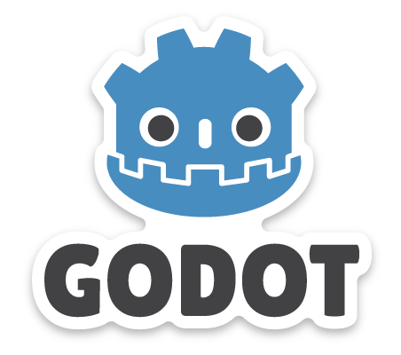

Introduction
Hello! Welcome to my dev blog. This page is here to serve a variety of purposes. First, it is a requirement for CS601. With that out of the way, the real purpose for this site is to act a journal, blog, idea repo, and show-off page for a game idea I've been toying around with. I've been a consumer of interactive media for most, if not all my life, and I've acquired a specific, almost hipster-esque level of esotericisim when it comes to preferences. Once I began taking CS classes, and learning the intricacies of programming, I gained a new appreciation for the mechanics and systems behind the games I played. I started to study systems, break AI, speed run, and try to force bugs in the games I play. I did all this, not out of malice, but out of love for the challenges that that devs faced, and for the solutions they implemented. The quality of a battle is measured by the shape of its scars.
To that end, I have decided to start working on a game of my own. It will be, initially at least, very limited in scope, and simple in implementation. Most details of the game are unclear, undecided, unknown, or too vague to be worth mentioning at this time. The details I do know are as follows:
- The game will be single player only
- The game will use pixel/ 16bit graphics
- The game will be a Rogue-like or Rogue-Lite
- The game will have elements that can both be unlocked and relocked, depending on the performance of the last run.
The one question everyone always asks is: What engine will you use to make it? Its true that there are a lot of beginner friendly game-making programs out there, but I'm probably going to stick to the mainstream ones. Namely, Unity or Godot. Both offer very similar features and benefits. Unity is, as one would expect for an industry level engine, more complicated, powerful, and versatile. That is, however, both a strength and a weakness. Godot is designed to create relatively simple, moslty off line, moslty 2D games. Its can't do as much, but thats fine, since my game doesn't NEED to do much. Unity, however, is written in C#; a language I am very familiar and comforatble with. Godot, conversly, uses its own proprietary langauge. Its not a hard one to learn, but it is an uneccessary extra step in the whole process.
vs 